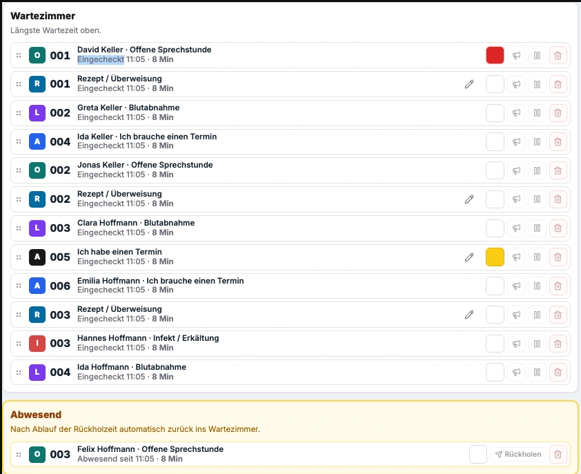

Praxisorganisation · Ratgeber & Vergleich
Patientenaufruf, digitale Anamnese und Patientenportale im Vergleich
Welche Arbeit soll an der Anmeldung entfallen – und was leistet Ihr PVS bereits?
Dieser Ratgeber vergleicht ausgewählte Lösungen nach Funktionen, PVS-Anbindung, Datenwegen, Betriebsmodell und Kosten. Studien zur Entlastung, ein Anbietervergleich und eine Checkliste helfen, Nutzen und zusätzlichen Aufwand im eigenen Praxisablauf zu beurteilen.
Welche Aufgabe soll die Software übernehmen?
Aufrufsysteme steuern Besuche, Formularlösungen erfassen Angaben, Portale ermöglichen den Austausch mit Patienten. Kombinierte Angebote unterscheiden sich vor allem bei Integration und Einsatzort.
Warteliste, Aufruf und Raumzuordnung
Ein gemeinsamer Überblick über Wartende, Aufenthaltsorte und nächste Stationen.
Aufrufsysteme vergleichen →Anamnese und Unterlagen übernehmen
Maßgeblich sind Vorlagenumfang, sichere Patientenzuordnung und Übernahme ins PVS.
Den vollständigen Datenweg prüfen →Vor und nach dem Besuch kommunizieren
Formulare zu Hause, Nachrichten und Befundversand erfordern einen dafür vorgesehenen Online-Zugang.
Vorhandene Portalmodule prüfen →Aufrufablauf prüfen
Anmeldung → Warteliste → Raumzuweisung und Aufruf → Abschluss oder nächste Station.
Wer aktualisiert den Besuchsstatus? Wie werden Raumwechsel, Nichterscheinen und dringende Behandlungen im Team sichtbar?
Wie stark entlasten digitale Lösungen eine Praxis?
Studien zeigen Zeitgewinne bei einzelnen Arbeitsschritten. Anmeldedauer, Personalzeit und selbsteingeschätzte Entlastung sind dabei unterschiedliche Messgrößen. Eine allgemeine Einsparquote für Arztpraxen lässt sich daraus nicht ableiten.
Selbstanmeldung · Beobachtungsstudie
2:47 Minuten kürzere Anmeldung
In einer US-amerikanischen orthopädischen Ambulanz wurden 28.636 Anmeldungen über sechs Terminals ausgewertet. Die Anmeldedauer lag gegenüber historischen Vergleichswerten um 2 Minuten und 47 Sekunden niedriger (Mosher et al., 2020). Gemessen wurde die Dauer der Anmeldung – weder eingesparte MFA-Arbeitszeit noch die gesamte Wartezeit bis zur Behandlung. Studie: Check-in Kiosks in the Outpatient Clinical Setting ↗
Digitale Anamnese · Herstellerbefragung
Rund vier Minuten je Befragung – selbst eingeschätzt
35 ärztliche Idana-Anwender, davon 25 aus der Allgemeinmedizin, schätzten 2021 ihre Zeitersparnis ein. Der Hersteller berichtet daraus durchschnittlich jeweils etwa vier Minuten für ärztliche Tätigkeit und MFA-Arbeit je Befragung. Die kleine Anwenderbefragung beruht auf Zeitintervallen und Selbstauskunft, nicht auf einer beobachteten Zeitmessung mit Kontrollgruppe. Idana: Ergebnisse und Methodik, S. 4–5 ↗
Portalfragebögen · Randomisierte Pilotstudie
5,9 statt 17,7 Minuten Personalzeit
Eine US-Studie mit 30 Epilepsiepatienten verglich Fragebögen über ein Patientenportal mit telefonischer Erhebung. Bei den abgeschlossenen Erhebungen nach sechs Monaten benötigte das Studienpersonal durchschnittlich 5,9 statt 17,7 Minuten. Allerdings lieferten nur 10 von 15 Personen im Portalarm vollständige Rückmeldungen, telefonisch alle 15. Telefonisches Nachfassen blieb daher relevant (Munger Clary et al., 2022). Das Ergebnis betrifft eine Studienerhebung, keine allgemeine Praxisanamnese. Pilotstudie in JAMIA Open, Tabellen 2–3 ↗
Vorhandene PVS-Funktionen und Integrationsstufen
Bereits enthaltene PVS-Module können eine zusätzliche Anwendung ersparen. Maßstab ist der vollständige Ablauf: Empfang, Patientenzuordnung und Ablage einer Unterlage.
PVS-Kompatibilität bezeichnet unterschiedliche Integrationsstufen: Parallelbetrieb, Dateiübergabe oder direkte Schnittstelle. Entscheidend sind PVS-Version, übertragene Daten und verbleibende manuelle Schritte.
Für den Kontaktabgleich kann CSV genügen. Wenn sich die benötigten Stammdaten selten ändern, kann ein regelmäßig aktualisierter Export den Zweck erfüllen. Neue Patienten und Änderungen müssen im Abgleich berücksichtigt werden; eine automatische Dokumentenübergabe in die Patientenakte ist damit nicht verbunden.
Wartezimmer unterstützt diesen CSV-Abgleich bereits. GDT- oder andere PVS-Anbindungen lassen sich bei Bedarf als Individualentwicklung ergänzen. Voraussetzungen sind ein geeignetes PVS-Profil, gegebenenfalls dessen Freischaltung und ein geprüfter Übergabeprozess. Sie gehören derzeit nicht zum Standardumfang. Planungsstand der PVS-Anbindung ↗
medatixx + gesund.de
Nachrichten und Dokumentenaustausch für unterstützte medatixx-Systeme; die Anbindung ist kostenfrei, das PVS kostenpflichtig.
Unterstützte Systeme und Funktionen ↗tomedo + arzt-direkt
Messenger und Dokumentenaustausch sind für tomedo derzeit kostenlos; digitale Patientenformulare werden als gesondertes kostenpflichtiges Modul angeboten.
Anbieter im Vergleich: Funktionen, Betrieb und Kosten
Welche Arbeit übernimmt die Software zum genannten Preis? Vergleichen Sie fünf Aufgaben der Anmeldung: Patienten vor Ort aufrufen, sie bei Ankunft selbst einchecken lassen, Formulare ausfüllen, Termine online buchen und Patienten per SMS benachrichtigen.
- ● Im Preis enthalten
- $ Kostet zusätzlich
- – Im Tarif nicht belegt
| Lösung / Schwerpunkt | Betrieb | Softwarepreis | Leistungsumfang |
|---|---|---|---|
| LISA ↗Patientenaufruf | Cloud |
49 €je Behandler/Monat netto |
$
Praxis-TV als Zusatzmodul
PVS: Aufruf aus tomedo, sonst separate Anwendung.
|
| cleverQ ↗Aufruf & Besuchersteuerung | Cloud oder lokal | Auf AnfrageTarif Advanced |
PVS:
API und Krankenhausanbindungen; konkrete PVS-Anbindung prüfen.
|
| Idana ↗Anamnese & Formulare | Cloud |
ab 79 €je Praxis/Monat · netto Jährliche Zahlung, nutzungsabhängig |
$
Fragebogeneditor: 379 € netto
PVS:
GDT, PDF und JSON; Übernahme in die konkrete PVS-Version prüfen.
|
| samedi ↗Termine & Praxisorganisation | Cloud |
ab 59 €Tarif Essential · je Arzt/Monat Umsatzsteuer bestätigen |
PVS:
GDT/VDDS/x.time
dokumentiert; Dokumentenexport klären.
|
| Doctolib ↗Patientenmanagement | Cloud |
229 €je Arzt/Monat · inkl. MwSt. Jahresabo mit KI-Telefon¹ |
PVS: Dokumentenaustausch und Stamm-/Termindatenexport;
PVS-Anbindung klären.
|
| Wartezimmer ↓Besuchsabläufe vor Ort · Produkt des Autors | Lokal | 0 €Lizenzgebühr für zulässigen Eigenbetrieb |
PVS: CSV-Kontaktabgleich; Dateien/PDF. GDT als
Individualentwicklung.
|
Ein Strich bedeutet, dass die Quellen keine eindeutige Zuordnung zum Tarif erlauben. Hardware, Einrichtung und Betreuung können auch bei enthaltenen Funktionen hinzukommen. ¹ Doctolib: Hausarzt-Auswahl; ohne KI-Telefon laut Preishinweis 139 €/Monat, Abrechnungsdetails bestätigen.
Leistungsumfang, Einrichtung und Export im Detail
- LISA
- Bildschirm- und Sprachaufruf sind enthalten. Wer dort auch eigene Praxisinformationen zeigen möchte, benötigt das Modul Praxismarketing: 39 € netto im Monat für den ersten Bildschirm, 29 € für jeden weiteren. In Kombination mit dem Aufruf sinkt der Preis um 5 € je Bildschirm. Selbsteinrichtung ist möglich; Service und LISA Box kosten extra. Vollständiger Datenexport offen.
- cleverQ
- Der Tarif Advanced bündelt QR- oder Terminal-Tickets, Bildschirmaufruf und Online-Termine. Wer nur vor Ort aufruft, kann auch Essential anfragen. SMS werden monatlich nach Verbrauch abgerechnet. Für die lokale Docker-Variante benötigt der Anbieter Fernzugriff für Installation und Updates. Statistikexport belegt; vollständigen Export klären.
- Idana
- Cloud-Dienst mit Windows-/macOS-Anwendung; Patienten nutzen den Browser. Der Einstiegstarif enthält Fragebögen und deren Auswertung. Wer eigene Bögen anlegen oder Vorlagen selbst bearbeiten möchte, zahlt für den Fragebogeneditor 379 € netto. Die PVS-Einrichtung kostet ab 299 € netto.
- samedi
- Im Tarif Essential sind Online-Terminbuchung, Selbstanmeldung bei Ankunft und Patientenkonto enthalten. Das Konto zeigt auch digitale Formulare an. Für Praxen, die einen Standardbogen versenden und ausgefüllt zurückerhalten möchten, nennt die Modulpreisliste 30 € je Arzt und Monat; SMS kosten dort 0,08 € pro Credit. Geltung für das individuelle Angebot bestätigen. Das digitale Wartezimmer mit Wartezeitprognose steht ab Comfort Praxis (99 € je Arzt und Monat) zur Verfügung. CSV-Ausgabe nach Vertragsende zeitlich begrenzt.
- Doctolib Patientenmanagement
- Im Hausarzttarif Patientenmanagement buchen Patienten Termine online und geben vorab ihre Daten zur Aufnahme ein. Der Patientennavigator zeigt dem Team den Besuchsstatus. Ob Selbstanmeldung bei Ankunft und SMS ohne Aufpreis enthalten sind, geht aus der Tarifansicht nicht hervor. Dokumentenaustausch und Stamm-/Termindatenexport dokumentiert; vollständigen Dokumentenexport klären.
- Wartezimmer
- Manager für macOS/Windows x64 und Browseroberflächen. Aufruf, Räume, mehrstufige Abläufe und Selbstanmeldung am Terminal. Das besuchsbezogene Portal im Praxisnetz enthält einen allgemeinmedizinischen Aufnahmebogen. Eine Online-Terminbuchung ist nicht enthalten. Beim optionalen Zurückholen per SMS fallen Versandkosten beim SMS-Dienst an. Keine Standard-PVS-Anbindung; Source-available ohne zugesicherten Komplettbetrieb. Hardware, Einrichtung, Individualentwicklung und Betreuung verursachen gegebenenfalls Kosten.
„Offen“ kennzeichnet eine unzureichende Quellenlage und belegt keine fehlende Funktion.
Gesamtkosten über drei Jahre
Kalkulation: Einrichtung + Hardware + 36 × laufende Gebühren + Betreuung + interner Aufwand. Vergleichbar sind Angebote für dasselbe Szenario einschließlich Schnittstellen, Updates und Datenmitnahme.
Vom Dokument zur Patientenakte
Für jede Lösung zählt der vollständige Datenweg vom Patienten bis zur korrekten Ablage im PVS.
-
Abgeben
Abgabe zu Hause oder vor Ort? Smartphone, Praxisgerät oder Alternative ohne Smartphone?
-
Zuordnen
Wie werden Identität und Zuordnung geprüft, Namensgleichheit erkannt und Fehlzuordnungen korrigiert?
-
Prüfen
Wer prüft Inhalt und Vollständigkeit, bearbeitet Rückfragen und auffällige Dateien?
-
Übernehmen
Werden Originaldateien, PDFs oder strukturierte Antworten übertragen? Wer bestätigt die PVS-Ablage vor Löschung der Zwischenkopie?
Automatisierte Übernahme und manuelle Nacharbeit getrennt bewerten.
Wartezimmer im bestehenden Praxisablauf
Wartezimmer verbindet Anmeldung, Warteliste, Räume und Aufruf mit optionaler Dokumentenabgabe. Patientenakte, Dokumentation und Abrechnung bleiben im PVS.
Ausgelegt auf die gemeinsame Übersicht mehrerer Behandelnder und Stationen. Terminal und Anzeigen lassen sich später ergänzen.

Installation und Wiederherstellung
Der Manager führt durch Paketprüfung, Installation, Start, Updates und Wiederherstellung der Einstellungen. Im vorgesehenen Ablauf sind keine Konsolenbefehle nötig. Betriebssystem, Docker, Netzwerk und laufende Betreuung bleiben Aufgaben der Praxis beziehungsweise ihres IT-Dienstleisters.
Entwickler-Richtwert: etwa fünf Minuten für die Basisinstallation auf vorbereitetem Rechner. Vorausgesetzt sind laufendes Docker und das Installationspaket. HTTPS, Patientenzugang und Praxiskonfiguration kommen hinzu.
Eine Neuinstallation kann gesicherte Einstellungen übernehmen. Laufende Besuche werden nicht wiederhergestellt; Geräte müssen neu gekoppelt werden. Ein Ersatzablauf bleibt erforderlich.
Installation und Recovery im Detail ↗Lokale Verarbeitung und Löschung
Unterlagen bleiben nur für den laufenden Besuch: Nach Export, Verwerfen, endgültiger Entlassung oder Tagesreset werden sie gelöscht.
Exportierte Dateien bleiben erhalten und müssen separat archiviert und gesichert werden. Zugriffsschutz gilt auch für temporäre Daten.
Nicht exportierte Unterlagen können bei einem Containerneustart verloren gehen und müssen dann erneut abgegeben werden. Vor Wartung und Updates offene Unterlagen bearbeiten.
Kein Cloud-Backend für den Kernbetrieb; externe Dienste sind für Zertifikate und optionale Nachrichten möglich.
Dokumente, Löschung und Portalzugang →Aktueller Formularumfang: allgemeinmedizinische Erstanamnese und Datenschutz-Einwilligung. Weitere Vorlagen erfordern eine Projekterweiterung; ein frei bedienbarer Formularbaukasten ist nicht enthalten. Vorlagen und Erweiterung ↗
Besuche vor Ort organisieren
- Gemeinsame Übersicht, Aufruf und Stationswechsel.
- Lokale Ergänzung des bestehenden PVS.
- Formulare und Uploads während des Besuchs.
- Individuelle Abläufe, bei Bedarf mit IT-Unterstützung.
Vor und nach dem Besuch kommunizieren
- Formulare von zu Hause ausfüllen.
- Dauerhafte Patientenkonten und Befundversand.
- Umfangreiche Fachfragebogen-Kataloge.
- Automatisierte, strukturierte PVS-Übernahme.
Wie werden Besuchsabläufe technisch abgesichert?
Flow-Core prüft zulässige Besuchsübergänge serverseitig. Raumkapazität und Voraussetzungen werden vor Zuweisung geprüft; zusammengehörige Änderungen sind transaktional abgesichert. Geschützte Ablaufvorlagen verhindern widersprüchliche Konfigurationsänderungen während laufender Besuche.
Aktueller Sicherheitsstand: Im Manager und eingebetteten Setup ist CVE-2026-111497 weiterhin offen. Lokaler Betrieb beseitigt diese Runtime-Lücke nicht. Befund, Einschränkungen und Stand der Behebung ↗
Praxistest: Aufwand und Nutzen im Team bewerten
Für einen typischen Ablauf prüft die MFA-Leitung die Handgriffe, die ärztliche Leitung den Nutzen und die IT die Betriebsfähigkeit.
Zunächst mit fiktiven Daten testen, anschließend im freigegebenen Betrieb Nachfragen, Doppeleingaben und Wege erfassen. Ähnliche Situationen vor und nach Einführung vergleichen.
Checkliste zum Abhaken und Ausdrucken. Keine Übertragung oder dauerhafte Speicherung der Angaben.
Häufige Fragen zur Auswahl und zum Betrieb
Kann ein Patientenaufrufsystem ohne PVS-Schnittstelle sinnvoll sein?
Ja, sofern der Nutzen im eigenständigen Ablauf den Aufwand für zusätzliche Eingaben rechtfertigt. Entscheidend ist der vollständige Prozess einschließlich Patientenzuordnung und PVS-Übernahme.
Was unterscheidet ein lokales Portal von einem Internetportal?
Wartezimmers Portal ist besuchsbezogen im Praxisnetz erreichbar. Eigene Smartphones benötigen einen Patientenzugang mit HTTPS und geprüfter Netztrennung. Dauerhafte Konten und öffentliches Ausfüllen von zu Hause sind nicht vorgesehen. Netzwerkvoraussetzungen →
Ist lokaler Betrieb automatisch datenschutzkonform?
Nein. Auch temporäre lokale Verarbeitung unterliegt der DSGVO. Zugriffsschutz, sichere Übertragung, Löschung und die Einbindung von Dienstleistern müssen geregelt sein. Begriff der Verarbeitung beim Europäischen Datenschutzausschuss ↗
Was sichert das Wartezimmer-Backup?
Einstellungen und Konfiguration, gegebenenfalls HTTPS-Daten; keine Besuche oder Patientenunterlagen. Das unverschlüsselte Backup kann Zugangsdaten und private Schlüssel enthalten und muss geschützt aufbewahrt werden. Exportierte Unterlagen sind separat zu sichern. Backupumfang und Wiederherstellung ↗
Ist Wartezimmer kostenlos und Open Source?
Der zulässige Eigenbetrieb ist lizenzgebührenfrei; Hardware, Einrichtung und Betreuung können Kosten verursachen. Die Source-available-Lizenz erlaubt Anpassungen und IT-Dienstleistungen, beschränkt aber Weitergabe und Produktangebote. Sie ist keine OSI-Open-Source-Lizenz und verpflichtet nicht zu Support oder Updates. Lizenz verständlich erklärt →